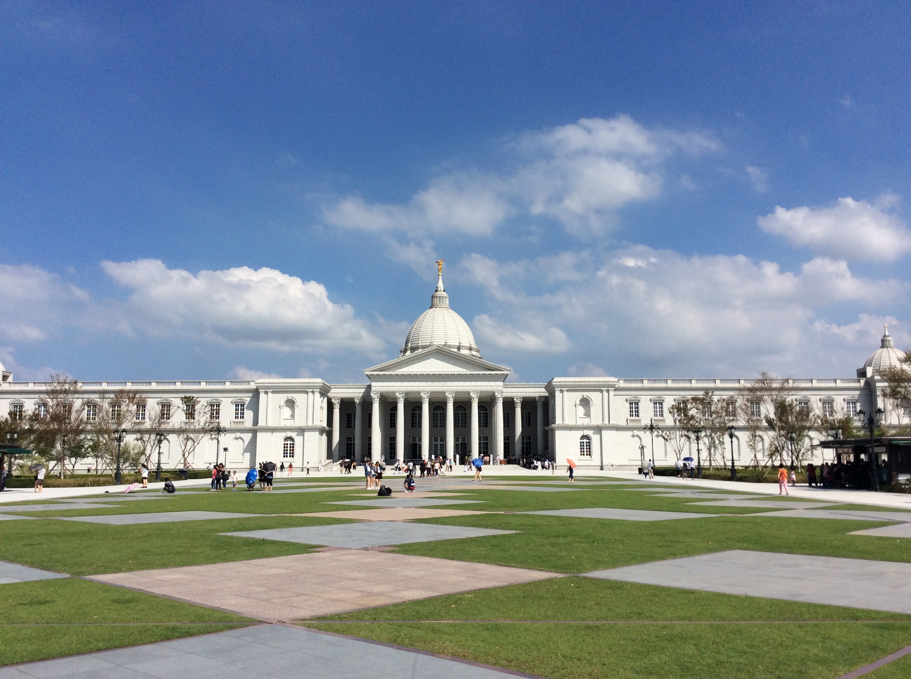
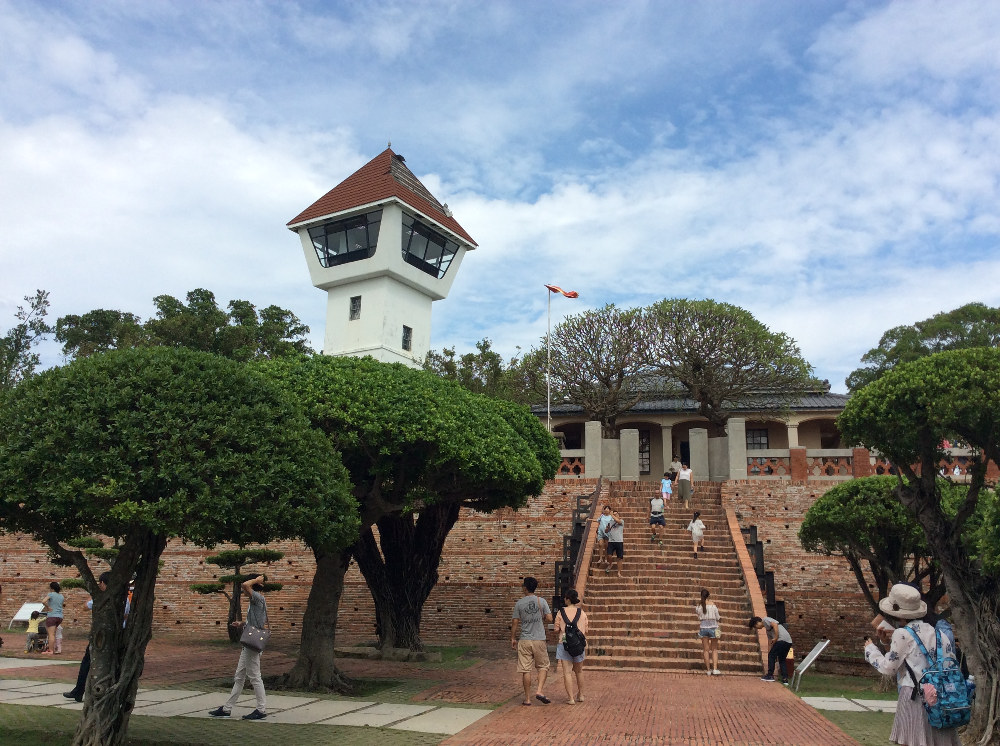
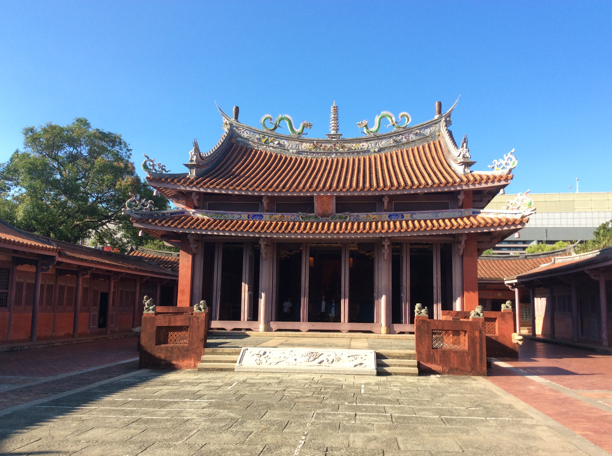
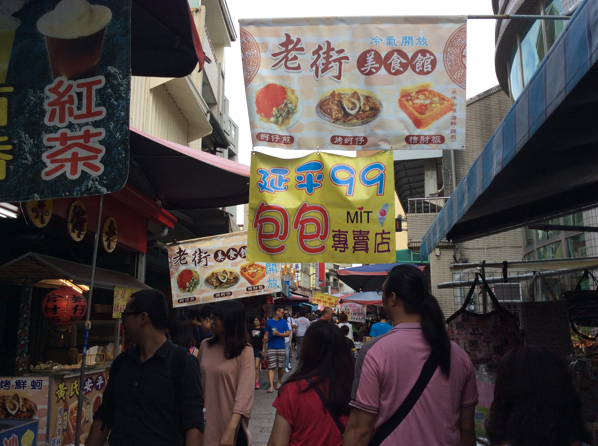

|
|
Southern Taiwan |
| Chimei Museum | ||
|
The Chimei museum (present day) is located in Tainan Metropolitan Park, and was constructed by the Chimei Corporation. The founder, Mr. Wen Long Shui, had an extensive collection of western arts, musical instruments, weaponry, and fossils. Over 4000 objects are displayed in the several exhibit rooms in Chimei Museum. For people who are interested in art and natural history, it is the perfect attraction to go to in Tainan! Even if you don't buy any tickets, you can enjoy the beautiful scenery of the grounds surrounding the museum.
The parks around the museum has a fountain with statues of horses and figures in Greek mythology. There a white bridge decorated with sculptures of gods and goddesses spanning a river that lead up to the front door of the museum. Inside the museum, there are 4 permanent exhibition rooms, including an arms and armour room, natural history and fossil room, a musical instruments room, and a fine arts room. There is a temporary exhibition room, and a gallery. |

|
 |
| Anping Fort | ||

|
 |
Anping Fort, also called Fort Zeelandia, was constructed by the Dutch in a period from 1624 to 1634.In 1662, General Koxinga conquered the Dutch, and the fort became his home. A portion of the fort became government offices. When Taiwan came under Japanese rule in 1895, the fort changed hands, and a part of it was demolished. It has now become a popular tourist historical attraction today.
All that remains of Fort Zeelandia today is a part of a old, red, orange brick wall. The wall was constructed by the dutch, and a part of the strong wall still stands today. Around the fort, there are several old cannons, made by the governmnent of Taiwan a century ago. They are now moved to the fort when it became an attraction. On the top of the large brick platform, there is a tall Surveillance tower (it has now become an observartion deck). It was built in 1945, and in 1975, the walls were painted white, and the roof and building renonvated to become available to tourists. |
| Tainan Confucian Temple | ||
|
The Tainan Confucian Temple was constructed during the rule of General Koxinga's son, Cheng Ching in the year 1665. It was built as an institute for education and learning back then.
The sign painted in golden letters on the main doorway means “First academy of Taiwan”. After extensive renovations over the years as an effort to preserve the temple, it is now an important cultural and historical site in Tainan |

|
 |
| Taijiang National Park | |||||||||||||||||||||||||||||||||||

|

|
Taijiang National Park is one of the nine national parks in Taiwan, established in 2009. It covers an area of 39,310 hectares, protecting not only the diverse flora and fauna of the estuaries, but also a passing point to yearly migratory birds.
The park includes the Sicao wetlands and Wetlands, Zengwen River mouth wetlands, and the Yanshui River mouth wetlands... etc, The Zengwen River mouth wetlands covers an area of 3,218 hectares. It is home to at least 250 species of molllusks, 240 species of fish, and 53 species of crabs, and mangrove forests. Also, the endangered migratory bird, the black faced spoonbill makes annual migrations starting in October, and leaving in March from the north to the south during winter. As much as two-thirds of the population come to Taiwan, making Taijiang an mportant feeding and resting place for the protected species. For people who like birdwatching, or just to simply take a break from teh city, Taijiang offers a place to relax and to enjoy nature. |
| Anping Old Street | |||
| Anping Market Street is another attraction in Anping that tourists will enjoy if they like shopping. The street has a variety of shops and stores, including food stalls, restaurants, gift shops. |  |

|

|